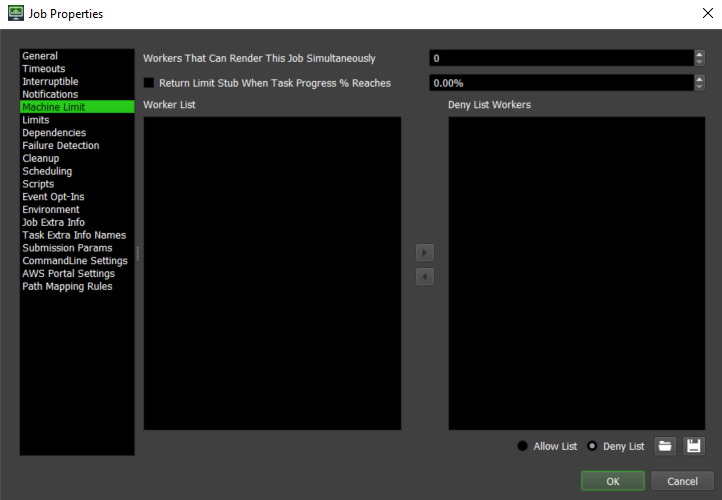
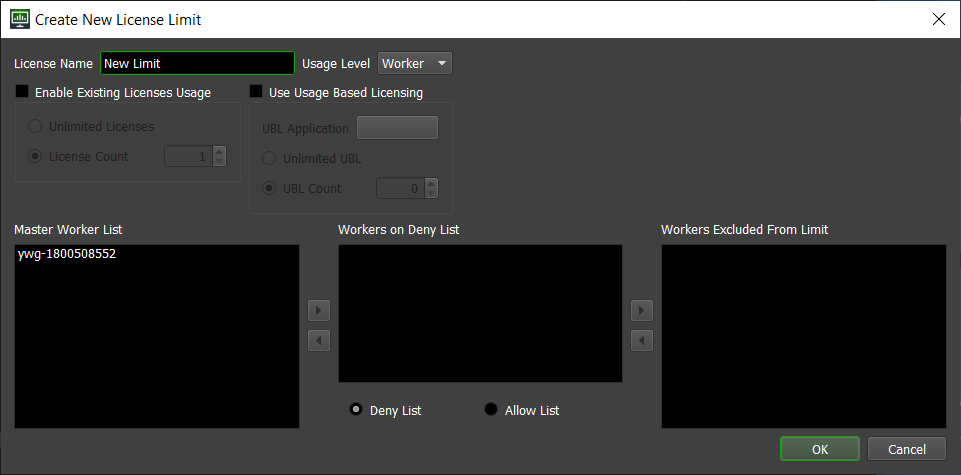

Network Performance¶
Overview¶
This guide is intended to help you find and fix potential bottlenecks in your Deadline render farm. If you are noticing sluggish performance when you are using Deadline, there are a few things you can do to try and improve it.
Adjust Monitor and Worker Settings¶
There are a few Monitor and Worker settings in the Repository Options that you can tweak to help improve performance, and reduce load on both the network and the database. You can also use the Auto Adjust option to figure out the best default values to use based on the number of Workers in your farm. See the Repository Options documentation for more information.


Enable Throttling¶
Deadline supports a Worker Throttling feature, which is helpful if you’re submitting large files with your jobs. This can be used to limit the number of Workers that are copying over the Job files at the same time. The Throttling settings can be found in the Worker Settings section of the Repository Options.

For example, if you have 100 Workers, and you’re submitting 500MB scene files with your jobs, you may notice a performance hit if all 100 Workers try to copy over the Job and Plugin files at the same time. You could set the Worker Throttle Limit to 10, so that only 10 of those Workers will ever be copying those files at the same time. When it goes to render subsequent tasks for the same Job, it will not be affected by the throttling feature, since it already has the required files.
Utilize Limits / Machine Limits¶
Irrespective of Worker Throttling, if your scene files (Maya, 3dsMax, modo, etc) are referencing a large amount of external asset files (textures, geo caches), then at initial startup of this job on multiple machines, your network file storage solution may struggle with this ‘fire storm’ of i/o demand. To lower this demand on your file server, you can use Machine Limits or Limits. One of the aspects of the limits feature is the ability to tell the Worker to not return the stub until the particular task being rendered by the Worker in question has reached a certain percentage, which would presume it has downloaded all the assets it needs. Note that not all Plugins report task progress, which is a requirement of this feature to operate correctly.
 Manage Job Auxiliary Files¶
If you are submitting your scene files with your Jobs, this can affect overall performance if the scene files are quite large. This is because whenever a Worker starts a new Job, it copies those Job files locally before rendering, including the Scene file if submitted with the Job. As mentioned in the previous section, if you have hundreds of Workers starting a Job with a large scene file, and your Repository hardware isn’t built to handle a large load, your performance will suffer.
If enabling Throttling isn’t helping, another option (which can also be used in conjunction if you wish) is to configure Deadline to store these scene files in an alternate location (like a separate, dedicated file server). This can be done by configuring the Job Auxiliary Files settings in the Repository Options.

From here, you can choose a server that’s better equipped to handle the load, which will help improve the performance and stability of your Repository machine, especially if it is also hosting your Database backend. In a mixed farm environment, you need to ensure that the paths for each operating system resolve to the same location. Otherwise, a scene file submitted with the Job on one operating system will not be visible to a Worker running on another.
Note: If you are hosting more than one Repository, you should not point them to use the same auxiliary file location. As part of housecleaning, auxiliary files belonging to deleted, archived, or otherwise missing jobs are routinely deleted from this location. Since housecleaning cannot determine if an auxiliary folder belongs to a job from a different Repository, each Repository should have its own separate auxiliary file location to avoid deleting another Repository’s auxiliary files.
Local Rendering¶
If the application plugin supports it, with “Local Rendering” enabled, Deadline will render the frames locally to temp disk space before copying them over to the final network location once rendering has completed. This has been known to reduce the load on your network and file server; consequently, reducing the time to render completion. Please check individual app plugins to see if the host application can support this functionality.

{kind=link}
{kind=link}